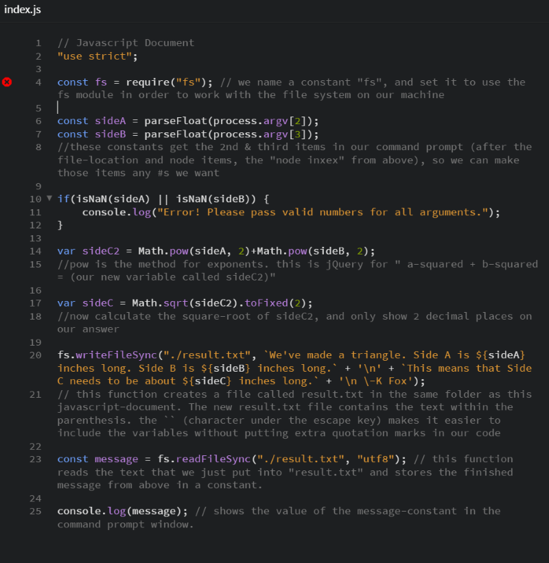

Scripting Exercise with Node.js Arguments and Modules
In our previous unit, we learned that Node.js is a JavaScript runtime environment that can run scripts or other applications outside of a browser. In this unit, we worked with some of the built-in modules that work like extra sets of Javascript libraries. These modules can be loaded by using the built-in require() function. We tried out the "fs" module, which has functions for working with the local file system, and even functions for reading and writing files.
Additionally, we learned how to pass arguments to a script using the Command Prompt window. We did this with the process-object combined with the argv-property. The argv-property places our arguments in an array after the path to the node command and the path to the script. This means that when we type "node scriptName argument1" into the Command Prompt window, it runs the script but also creates an array that can be used within that script. The array's first item [0] is "node", item [1] is "scriptName", item [2] is our first argument, and any additional arguments could follow.
An example of passing arguments by typing them in the Command Prompt window would look like this:
node scriptName orange 125
Then we could use the process-object and argv-property to access the arguments in a script by coding this:
const colorVar1 = process.argv[2]; //This would be "orange"
const colorVar2 = parseFloat(process.argv[3]); //This would be the number 125. (it uses parseFloat to ensure we entered a number)
M06 Exercise
In this exercise, we made a script that accepts 2 numerical arguments (in this case, the sides of a triangle), and uses them to calculate the length of the third side. It then writes that information into a separate text document as well as displaying that information in the Command Prompt window. The below screenshots show the code along with a step by step explanation, and we see screenshots of the results afterward.
